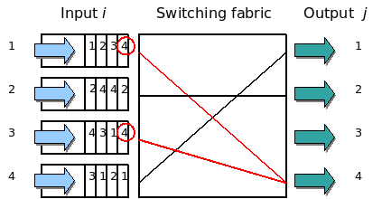
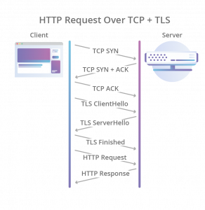
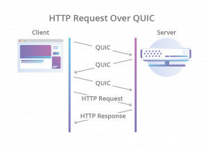

HTTP（Hypertext Transfer Protocol）翻译成中文是超文本传输协议，是互联网上最重要的协议之一，由欧洲核子研究委员会 CERN 的英国工程师 Tim Berners-Lee 发明，他同时也是 WWW 的发明人。HTTP 最初主要用于传递通过 HTML 封装的数据：1991 年发布了 HTTP/0.9 版，1996 年发布 1.0 版，1997 年发布 1.1 版——1.1 也是迄今为止传输最广泛的版本（初始的 RFC 2068 在 1997 年发布，1999 年被 RFC 2616 取代，2014 年又被 RFC 7230/7231/7232/7233/7234/7235 取代）。2015 年发布的 2.0 版极大优化了 HTTP/1.1 的性能和安全性；2018 年发布的 3.0 版则更进一步，激进地用 UDP 取代了 TCP 作为底层传输协议。目前，HTTP/3 已于 2019 年 9 月 26 日得到 Chrome、Firefox 和 Cloudflare 的支持。
所以我想写下这篇文章，梳理一下 HTTP 的前世今生，希望可以让更多人学到一些知识，并推动 HTTP 标准协议的发展。
HTTP/0.9 与 HTTP/1.0：从极简到工程文明
0.9 和 1.0 这两个版本，就是最传统的 request–response 模式了。HTTP/0.9 简单到极点：不支持请求头，只支持 GET 方法，没了。
HTTP/1.0 扩展了 0.9 版，主要增加了几个变化：
- 增加了 HEAD、POST 等新方法
- 增加了响应状态码，用于标记可能的错误原因
- 引入了协议版本号管理
- 引入了 HTTP Header（头部），让 HTTP 处理请求和响应更加灵活
- 传输的数据不再局限于文本
可以看到，HTTP 从 1.0 开始变得很「文明」了，一种工程文明。
（注：国内很多公司的 HTTP 服务无论对错只返回 200，这种把 HTTP Status Code 全部抹掉的做法，完全是一种工程界的倒退。）
但是，HTTP/1.0 在性能上有一个很大的问题：每请求一个资源都要新建一个 TCP 连接，而且是串行请求。所以，就算网络变快了，打开网页的速度也还是很慢。HTTP/1.0 是一个必须要被淘汰的协议。
HTTP/1.1：成为应用层协议的一等公民
HTTP/1.1 主要解决了 HTTP/1.0 的网络性能问题，另外还增加了一些新东西：
- 增加了 PUT、DELETE、OPTIONS、PATCH 等方法
- 增加了 Host 头，让一台服务器可以支持多个域名（虚拟主机）
- 默认开启持久连接（Persistent Connection），复用 TCP 连接，减少建连开销
- 支持 Chunked Transfer（分块传输），响应可以流式发送
- 增加了更精细的缓存控制（Cache-Control、ETag 等）
HTTP/1.1 应该分成两个时代：一个是 2014 年前，一个是 2014 年后。因为 2014 年 HTTP/1.1 出了一组新的 RFC（7230/7231/7232/7233/7234/7235），这组 RFC 又被称为「HTTP/2 预览版」。其中影响 HTTP 发展的是两个大的需求：
- 移动互联网的爆发，大量的移动应用需要通过 HTTP 访问服务端
- RESTful API 的兴起，越来越多的应用把接口构建在 HTTP 之上
自从 2005 年以来，整个世界的应用 API 越来越多，这些都推动了整个世界对 HTTP 的演进。可以看到，自 2014 年的这组 RFC 之后，世界上主要的应用层协议标准基本都在向 HTTP 看齐。也许 2014 年前还有一些专用的 RPC 协议，但 2014 年以后，实在找不出什么理由不向标准靠拢、还要重新发明轮子了。
HTTP/1.1 的性能天花板
虽然 HTTP/1.1 已经成为应用层通讯协议的一等公民，但还是有性能问题。HTTP/1.1 虽然可以重用 TCP 连接，但请求还是一个一个串行发的，需要保证顺序。而大量网页请求中都是资源类的东西，这些请求占了整个 HTTP 传输数据量的大头。理论上，如果这些请求能够并行，就会带来更大的网络吞吐和更好的性能。
另外，HTTP/1.1 传输数据时是以文本的方式，借助耗 CPU 的 gzip 压缩来减少网络带宽，却耗掉了前端和后端的 CPU。这也是很多 RPC 协议诟病 HTTP 的一个原因：数据传输的成本比较大。
HTTP/2：SPDY 的标准化
其实，早在 2010 年，Google 就在搞一个实验型的协议——SPDY，这个协议成为了 HTTP/2 的基础（也可以说 HTTP/2 就是 SPDY 的复刻）。HTTP/2 基本上解决了上面这些性能问题，它和 HTTP/1.1 最主要的不同是：
- 二进制分帧（Binary Framing）：不再是纯文本协议，解析更高效
- 多路复用（Multiplexing）：一个 TCP 连接上并行跑多个请求，不再串行等待
- 头部压缩（HPACK）：剔除请求间重复的头部字段，减少传输量
- 服务器推送（Server Push）：服务端可以主动把资源推给客户端
- 请求优先级：关键资源可以优先传输
对于这些性能上的改善，Medium 上有一篇文章《HTTP/2: the difference between HTTP/1.1, benefits and how to use it》可以看到相关的细节说明和测试。
当然，还需要注意到 HTTP/2 的协议复杂度比之前所有的 HTTP 版本都上升了许多，其内部还有很多看不见的东西，比如需要维护一棵「优先级树」来做资源和请求的调度控制。如此复杂的协议自然会产生一些争议，比如可维护性和可扩展性的下降。尽管如此，HTTP/2 还是被世界很快地采用了。
HTTP/2 是 2015 年推出的，发布后 Google 宣布移除对 SPDY 的支持，全面拥抱标准的 HTTP/2。一年之后，就有 8.7% 的网站开启了 HTTP/2；到 2019 年 10 月，全世界范围内已有 41% 的网站开启了 HTTP/2。
HTTP/2 的官方组织在 GitHub 上维护了一份各种语言对 HTTP/2 的实现列表，感兴趣的可以去看看。
可以看到，HTTP/2 在性能上对 HTTP 有质的提升，所以被采用得很快。如果你在公司负责架构，HTTP/2 是一件非常值得推动的事——除了性能收益，推动标准落地本身就是架构师的主要职责。企业内部的架构越标准，你能使用到的开源软件和开发方式就越有效率，跟随着工业界标准的发展，企业会自然而然地享受到标准带来的红利。
HTTP/3：用 QUIC 破解队头阻塞
然而，这个世界没有完美的解决方案，HTTP/2 也不例外。它的主要问题是：若干个 HTTP 请求复用同一个 TCP 连接，而底层的 TCP 协议并不知道上层有多少个 HTTP 请求。一旦发生丢包，所有 HTTP 请求都必须等待这个丢失的包重传回来——哪怕丢的包不属于我这个请求。因为 TCP 底层没有这个知识。
这个问题又叫 Head-of-Line Blocking（队头阻塞），是一个比较经典的流量调度问题，最早主要发生在交换机上。下图来自 Wikipedia：

图中，左边是输入队列，1、2、3、4 表示四个队列，队列里的数据要发往右边的对应 output 端口。此时，第 1 个队列和第 3 个队列都要写右边的第 4 个端口，而一个时刻只能处理一个包，所以一个队列只能等另一个队列写完。此时 3 号和 1 号端口明明是空闲的，但要去 1 号和 3 号端口的数据，被第 4 号端口堵住了。这就是所谓的 HOL blocking 问题。
HTTP/1.1 的 pipeline 里如果有一个请求 block 了，队列后面的请求也统统被 block；HTTP/2 多个请求复用一个 TCP 连接，一旦丢包就会 block 住所有的 HTTP 请求。这个问题很讨厌，好像基本无解了。
是的，TCP 无解了，但是 UDP 有解！于是 HTTP/3 破天荒地把 HTTP 底层的 TCP 协议换成了 UDP！
接着，又是 Google 家的协议进入了标准——QUIC（Quick UDP Internet Connections）。QUIC 协议有几个重要的特性，为了讲清楚这些特性，需要带着问题来讲（注：下面的网络知识如果你看不懂，建议先学习一下《TCP/IP 详解》——在我写 blog 的这 15 年里，这本书我推荐了无数次——或看一下本站的《TCP 的那些事儿》）：
- 0-RTT 建连：TCP 三次握手加 TLS 握手要花 1～3 个 RTT，QUIC 把建连和握手合并，最快 0-RTT 就能发出数据
- 消除队头阻塞：多个 Stream 相互独立，一个 Stream 丢包不影响其他 Stream 的传输
- 连接迁移：用 Connection ID 而不是四元组标识连接，网络从 WiFi 切到 4G 连接不会断
- 前向纠错（FEC）：每个包带少量冗余数据，丢一个包可以直接算出来，不必重传
先看两组时序图的对比，左图是 HTTP Request Over TCP+TLS，右图是 HTTP Request Over QUIC：


所以，QUIC 是一个在 UDP 之上的伪 TCP + TLS + HTTP/2 的多路复用协议。
不过，QUIC 也面临一些挑战，主要来自互联网上的各种网络设备——它们根本不知道 QUIC 是什么，看到的只是 UDP，而 UDP 在一些情况下是有问题的：
- 一些内网防火墙会对 UDP 流量限流，甚至直接丢弃
- NAT 设备的端口映射超时后需要重新绑定（NAT Rebinding）
- 中间网络设备对 UDP 的优化和支持远不如 TCP 成熟
就算搞定了上面的东西，还有一些业务层的事没解——HTTP/2 的头压缩算法 HPACK 需要维护一个动态字典表来标记请求头里哪些是重复的，这个数据结构需要在 encoder 和 decoder 两端同步。在 TCP 上这种同步是透明的，但在 UDP 上不好办。所以这个事也必须重新设计，基于 QUIC 的 QPACK 就出来了：利用两条附加的 QUIC stream，一条用来把字典表的更新发给对方，另一条用来 ack 对方发过来的 update。
目前看下来，HTTP/3 没有太多协议业务逻辑上的新东西，更多是 HTTP/2 + QUIC 协议。但 HTTP/3 因为动到了底层协议，普及速度可能会比 HTTP/2 慢得多。不过，QUIC 协议的强大已经可见一斑，细思极恐——QUIC 对 TCP 是个威胁，如果 QUIC 成熟了，TCP 会不会有可能成为历史呢？
未来十年，让我们看看 UDP 是否能够逆袭 TCP……